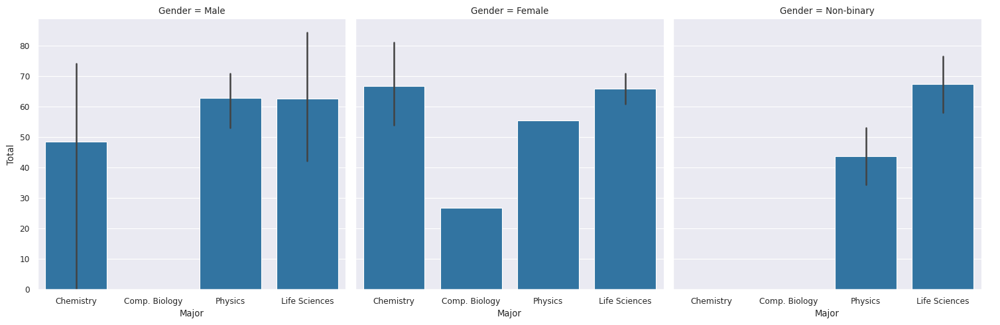
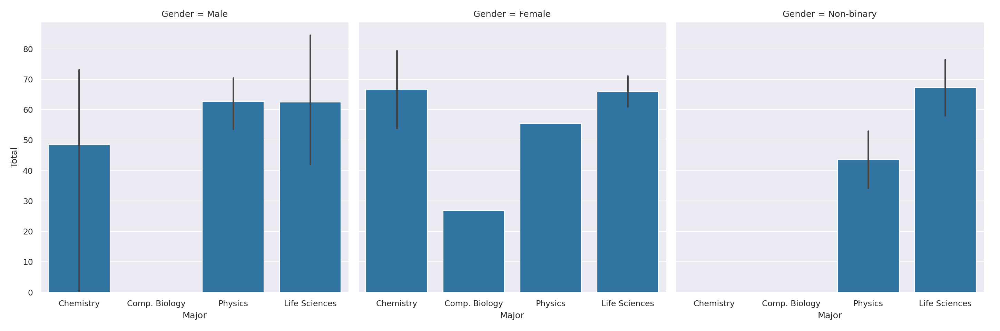
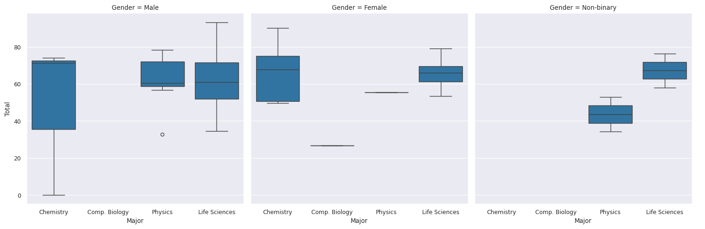
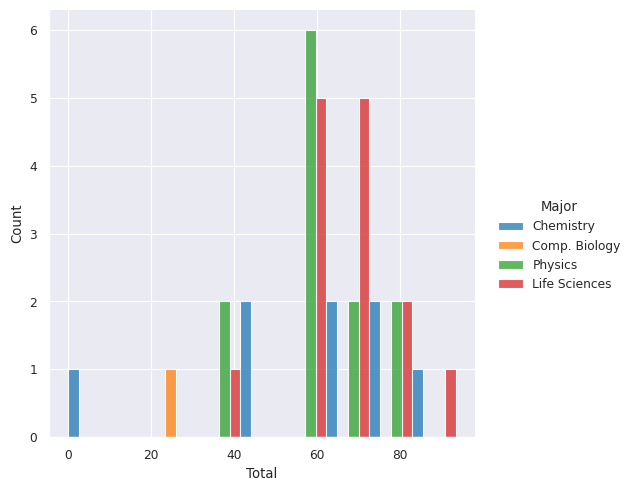

import seaborn as snsPandas (Nice)
What to expect in this chapter
In this chapter, I will quickly introduce you to a fantastic package called Seaborn that will make visualisation of data in the form of dataframes a breeze. Then, I will quickly show you a few other useful things, like how to merge two dataframes as this will be helpful if you have data spread over multiple files.
1 Seaborn
In this chapter, I will introduce Seaborn, a plotting package that extends Matplotlib for dataframes. Seaborn can achieve things in a few lines of code that might take you many with Matplotlib. However, I am just going to give you a taste of things. You can find more information on the seaborn website.
You will have to install the package and import it as:
I will be lazy and reload the dummy classroom data from the file (finalised_scores.xlsx) we wrote.
df = pd.read_excel('finalised_scores.xlsx')1.1 Setting the context
Seaborn can help tweak our plots based on where we want to use them. This is done with set_context(). The options we have are paper, talk and poster. You can also set a theme (i.e. plotting style).
sns.set_context("paper")
sns.set_style("darkgrid")1.2 Some Examples
-
We use
catplot()is used forcategorical data. Show me a bar chart for (the numbers in) columnTotalbased on the categorical variables in columnMajor. Split the plots into columns according to the categories inGender.sns.catplot(data=df, x="Major", y="Total", col="Gender", kind="bar")
plt.show()
Try the following:
- Swap
xandy - Use
rowinstead ofcol - Use
hueinstead ofcol
- Swap
-
sns.catplot(data=df, x="Major", y="Total", col="Gender", kind="box")
Try the following:
- Swap
xandy. - Use
rowinstead ofcol. - Use
hueinstead ofcol.
- Swap
-
Use
displot()for plotting distributions. Show me the histogram for the scores inTotalseparated out based on theMajor. Dodge the bars so that they do not overlap.sns.displot(data=df, x='Total', hue='Major', multiple="dodge")
Try the following:
- Use
roworcolinstead ofhue. - Use
stackinstead ofdodge.
- Use
2 A few more things
2.1 Merging dataframes
In the last chapter, I used pd.concat() to join two dataframes. pd.concat() is nice because you can give it a list of dataframes to join in one go. However, I now would like to take you through another way of combining the two dummy class dataframes with less hassle using pd.merge(). I have shown the full code below. However, here is the part that deals with pd.merge().
Understanding pd.merge()
df_combined = pd.merge(
left=df_class_1, # dataframe 1
right=df_class_2, # dataframe 2
how='outer', # Join without losing any data
left_on='Student No', # Use to align dataframe 1
right_on='Student No' # Use to align dataframe 2
)In the last chapter, we set the dataframe index to the MATRIC_NO in both dataframes so that we could use it to align the various rows during pd.concat(). However, if you use pd.merge(), we can specify two dataframes (using left= and right=) and two columns in these dataframes that can be used for alignment. This is what left_on= and right_on= do.
pd.merge() also has a parameter how= that decides how these two data sets are combined. You must be careful with this one. Here are the
| Option | Effect |
|---|---|
left |
Keep all rows of the left dataframe. If the right has missing on values, fill the right part with NaN |
right |
Keep all rows of the right dataframe. If the left has missing on values, fill the left part with NaN |
inner |
(default) Keep only those rows with common left and right data. |
outer |
Keep all rows of both dataframes. Fill any missing values with NaN |
Convince yourself of how how= works by trying the various options. Here are the results you should get for df_combined.shape.
| Option | Effect |
|---|---|
left |
(35,8) |
right |
(31,8) |
inner |
(31,8) |
outer |
(35,8) |
The full recipe
from matplotlib import pyplot as plt
df_class_1 = pd.read_excel('dummy-class-1-of-2.xlsx', skiprows=1)
df_class_2 = pd.read_excel('dummy-class-2-of-2.xlsx')
# Combine the two datasets
df_combined = pd.merge(
left=df_class_1, # dataframe 1
right=df_class_2, # dataframe 2
how='outer', # Join without losing any data
left_on='Student No', # Use to align dataframe 1
right_on='Student No' # Use to align dataframe 2
)
# Rename columns
df_combined.rename(
columns={'Student No': 'MATRIC_NO',
'Test 1 (30%)': 'Test 1',
'Test 2 (20%)': 'Test 2',
'Test 3 (50%)': 'Test 3'},
inplace=True
)
# Reorgnise/drop columns
df_combined = df_combined[['MATRIC_NO',
'Name', 'Major', 'Gender',
'Test 1', 'Test 2', 'Test 3']
]
# Replace text with long forms
df_combined.replace(
to_replace={
'PHY': 'Physics',
'CHM': 'Chemistry',
'LS': 'Life Sciences',
'CBIO': 'Comp. Biology',
'F': 'Female',
'M': 'Male',
'NB': 'Non-binary'
}, inplace=True
)
# Remove the ' from Test 2
def clean(text):
'''
Function to remove ' ' from column 'Test 2'.
To be applied using apply()
'''
try:
return text.replace("'", "")
except AttributeError:
# This will handle the NaN of the missing data
return text
df_combined['Test 2'] = df_combined['Test 2'].apply(clean)
# Update column types
df_combined = df_combined.astype({
'Gender': 'category',
'Major': 'category',
'Test 2': 'float'
}
)
# df_combined.fillna(0, inplace=True) # Fix missing scores
df_combined["Total"] = df_combined[['Test 1', 'Test 2', 'Test 3']].sum(axis=1)
df_combined = df_combined.round(2)
df_combined.to_excel('finalised_scores.xlsx', index=False)
df_combined.head()
df_combined.boxplot(by='Major',
column=['Test 1', 'Test 2', 'Test 3', 'Total'],
vert=False, figsize=(8, 6))
plt.show()2.2 isin()
df_class = pd.read_excel('dummy-class-1-of-2.xlsx', skiprows=1)
#------------------ Drop and reorganise columns -----------------#
columns_to_keep = ['Student No', 'Name', 'Major', 'Gender',
'Test 1 (30%)', 'Test 2 (20%)']
df_class = df_class[columns_to_keep]
#------------------------- Rename columns ------------------------#
new_column_info = {'Student No': 'MATRIC_NO',
'Test 1 (30%)': 'Test 1',
'Test 2 (20%)': 'Test 2'}
df_class.rename(columns=new_column_info, inplace=True)
#--------------------- Set index to MATRIC_NO --------------------#
df_class.set_index('MATRIC_NO', drop=False, inplace=True)
#-------------------------- Rename stuff -------------------------#
replace_info = {
'PHY': 'Physics',
'CHM': 'Chemistry',
'LS': 'Life Sciences',
'CBIO': 'Comp. Biology',
'F': 'Female',
'M': 'Male',
'NB': 'Non-binary'
}
df_class.replace(to_replace=replace_info, inplace=True)
#---------------- Remove the ' ' from column Test 2 --------------#
def clean(text):
'''
Function to remove ' ' from column 'Test 2'.
To be applied using apply()
'''
try:
return text.replace("'", "")
except AttributeError:
# This will handle the NaN of the missing data
return text
df_class['Test 2'] = df_class['Test 2'].apply(clean)
#--------------- Convert column Test 2 to type float -------------#
new_type_info = {'Major': 'category',
'Gender': 'category',
'Test 2': 'float'}
df_class = df_class.astype(new_type_info)
#------------------------ Add a new column -----------------------#
df_class["Total"] = df_class["Test 1"] + df_class["Test 2"]
#------------------------- Export the file -----------------------#
df_class.to_excel('finalised_scores.xlsx', index=False)
df_class.head()Let’s say we want to find out if ‘Ronin Christian’ and ‘Maryjane Sandoval’ are in the class and how they are doing. Let me show you another way to generate a mask using the method isin(), which queries the whole dataframe.
mask = df_class.isin(['Maryjane Sandoval', 'Ronin Christian'])
df_class[mask]| MATRIC_NO | Name | Major | Gender | Test 1 | Test 2 | Total | |
|---|---|---|---|---|---|---|---|
| MATRIC_NO | |||||||
| A3028967J | NaN | NaN | NaN | NaN | NaN | NaN | NaN |
| A1282849W | NaN | NaN | NaN | NaN | NaN | NaN | NaN |
| A5408925A | NaN | Ronin Christian | NaN | NaN | NaN | NaN | NaN |
| A6973859L | NaN | NaN | NaN | NaN | NaN | NaN | NaN |
| A5410124H | NaN | NaN | NaN | NaN | NaN | NaN | NaN |
| A9568373Q | NaN | NaN | NaN | NaN | NaN | NaN | NaN |
| A6824244G | NaN | NaN | NaN | NaN | NaN | NaN | NaN |
| A9194090U | NaN | Maryjane Sandoval | NaN | NaN | NaN | NaN | NaN |
| A4828364M | NaN | NaN | NaN | NaN | NaN | NaN | NaN |
| A4607700C | NaN | NaN | NaN | NaN | NaN | NaN | NaN |
| A7067766E | NaN | NaN | NaN | NaN | NaN | NaN | NaN |
| A5569996J | NaN | NaN | NaN | NaN | NaN | NaN | NaN |
| A3202548I | NaN | NaN | NaN | NaN | NaN | NaN | NaN |
| A6131593U | NaN | NaN | NaN | NaN | NaN | NaN | NaN |
| A7653832E | NaN | NaN | NaN | NaN | NaN | NaN | NaN |
| A9462811I | NaN | NaN | NaN | NaN | NaN | NaN | NaN |
| A1218599T | NaN | NaN | NaN | NaN | NaN | NaN | NaN |
| A7210476B | NaN | NaN | NaN | NaN | NaN | NaN | NaN |
| A1512479K | NaN | NaN | NaN | NaN | NaN | NaN | NaN |
| A7986368Y | NaN | NaN | NaN | NaN | NaN | NaN | NaN |
| A2727061A | NaN | NaN | NaN | NaN | NaN | NaN | NaN |
| A2999472W | NaN | NaN | NaN | NaN | NaN | NaN | NaN |
| A7116486E | NaN | NaN | NaN | NaN | NaN | NaN | NaN |
| A6931452S | NaN | NaN | NaN | NaN | NaN | NaN | NaN |
| A9649096H | NaN | NaN | NaN | NaN | NaN | NaN | NaN |
| A1643380L | NaN | NaN | NaN | NaN | NaN | NaN | NaN |
| A6787293E | NaN | NaN | NaN | NaN | NaN | NaN | NaN |
| A5975988J | NaN | NaN | NaN | NaN | NaN | NaN | NaN |
| A3699958T | NaN | NaN | NaN | NaN | NaN | NaN | NaN |
| A1956366U | NaN | NaN | NaN | NaN | NaN | NaN | NaN |
| A1468689D | NaN | NaN | NaN | NaN | NaN | NaN | NaN |
| A3217320C | NaN | NaN | NaN | NaN | NaN | NaN | NaN |
| A6867791C | NaN | NaN | NaN | NaN | NaN | NaN | NaN |
| A4080490P | NaN | NaN | NaN | NaN | NaN | NaN | NaN |
| A7667457P | NaN | NaN | NaN | NaN | NaN | NaN | NaN |
Since this output is overwhelming, we should use any() as any() will pick out the non-NaN locations. The axis option will allow us to specify if to apply it to rows or columns(I can never remember which is which, so I just try 0 or 1).
df_class[mask].any(axis=1)MATRIC_NO
A3028967J False
A1282849W False
A5408925A True
A6973859L False
A5410124H False
A9568373Q False
A6824244G False
A9194090U True
A4828364M False
A4607700C False
A7067766E False
A5569996J False
A3202548I False
A6131593U False
A7653832E False
A9462811I False
A1218599T False
A7210476B False
A1512479K False
A7986368Y False
A2727061A False
A2999472W False
A7116486E False
A6931452S False
A9649096H False
A1643380L False
A6787293E False
A5975988J False
A3699958T False
A1956366U False
A1468689D False
A3217320C False
A6867791C False
A4080490P False
A7667457P False
dtype: boolWe can reuse the above as a mask.
df_class[df_class[mask].any(axis=1)]| MATRIC_NO | Name | Major | Gender | Test 1 | Test 2 | Total | |
|---|---|---|---|---|---|---|---|
| MATRIC_NO | |||||||
| A5408925A | A5408925A | Ronin Christian | Physics | Male | 18.366 | 15.56 | 33.926 |
| A9194090U | A9194090U | Maryjane Sandoval | Life Sciences | Female | 18.981 | 16.40 | 35.381 |
A shorter way is to use any() to probe the mask directly.
df_class[mask.any(axis=1)]